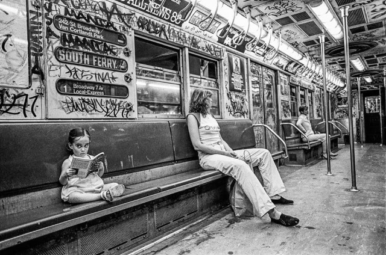
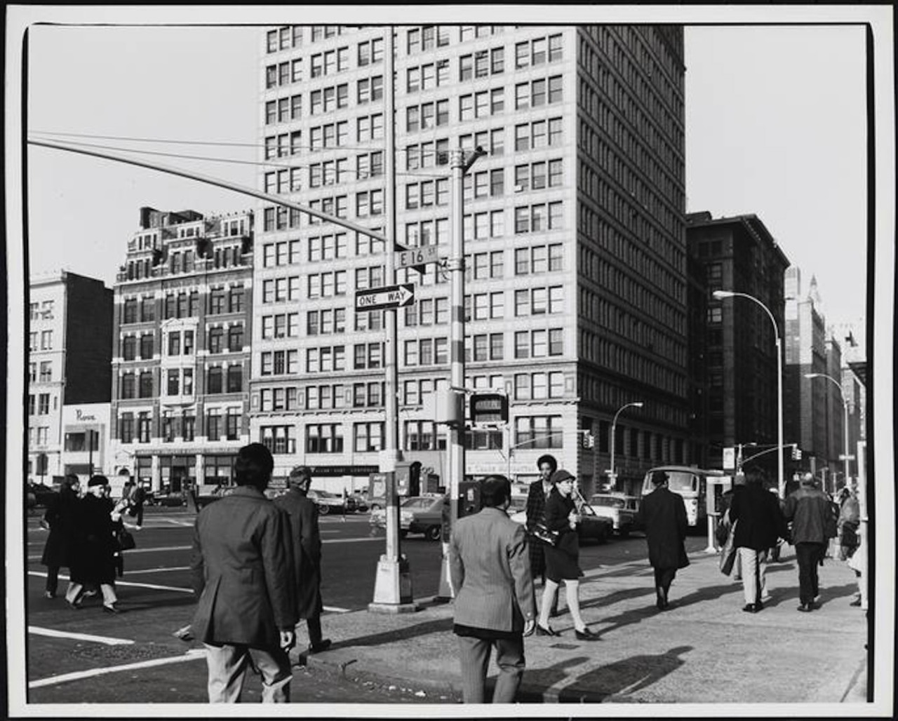
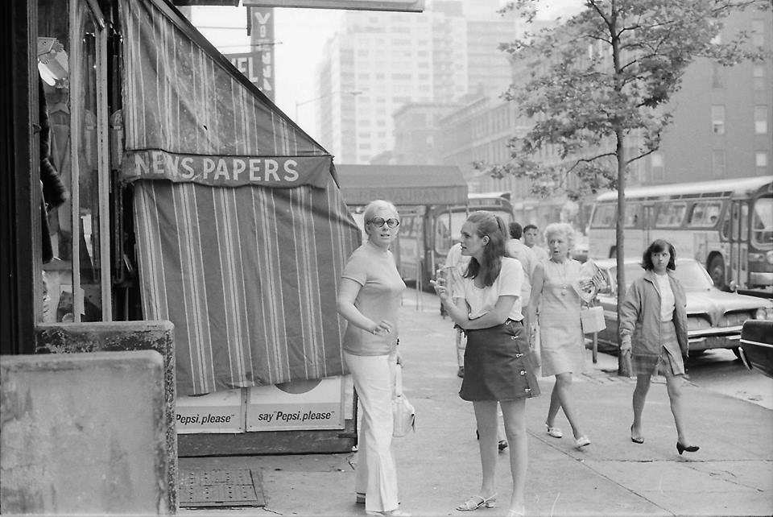
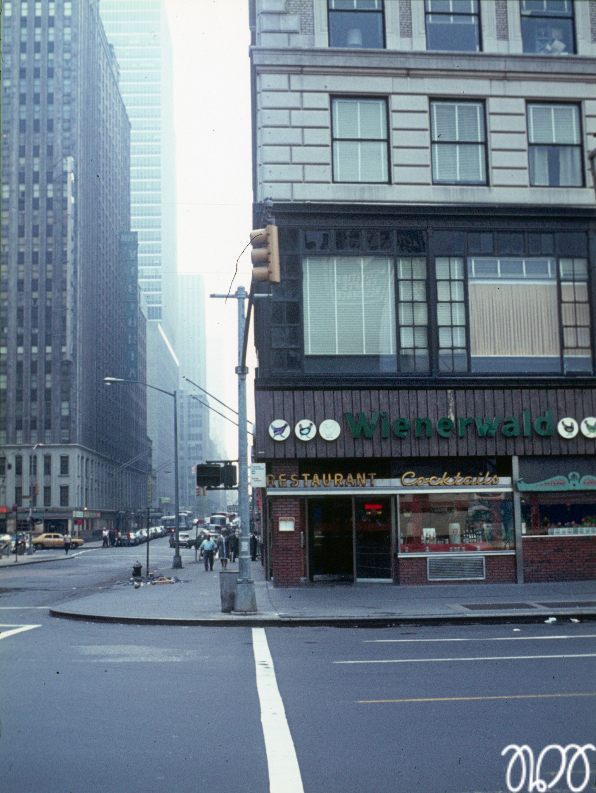
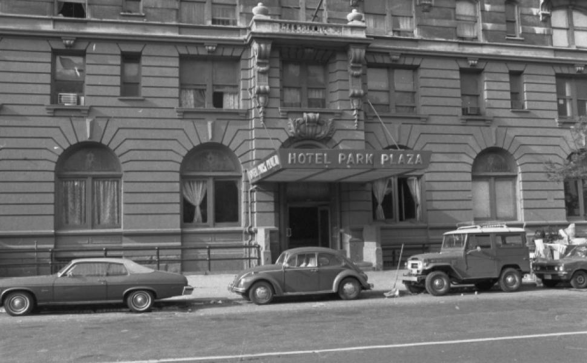
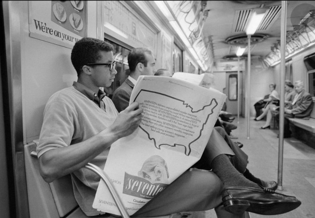

South Bronx, 1987
South Bronx, 1987

Mime about to get jacked, West Broadway and Prince Street, 1975

Payphone on 6th Ave, 1990
Chock full o’ Nuts, at Madison and 23rd, 1972

46th and Broadway, 1972
Midtown parking, 1978
 A kid straight out of a Stephen King story wonders why no one wants to sit near her.
54th and 3rd, 1978

Old school painting, Broadway and 35th, 1970s

July 4, 1986

Downtown shoeshine, 1986

Union Square (16th St) in the 1970s

Unhappy old ladies walking down Essex Street, 1975. Maybe if they had a natural fiber or two in their dresses…

“Wake up and put on some goddamn shoes.”
Washington Square Park, 1977.

Too many cops, Long Island City, 1994

Near Brooklyn College on Flatbush Ave, 1983.

Times Square, 1977

Upper East Side, 1970s

William Gottleib Dizzy Gillespie at the Corner of 52nd St and 6th Avenue, New York City c.1946
“It’s taken me all my life to learn what not to play.” Dizzy Gillespie

Sleeping in Times Square. Pretty fucking impressive, really. 1985

Jogging on the Brooklyn Bridge, 1984

Weinerwald

Brownsville, 1972

1971 subway ride
East 148th St in the Bronx, 1985
HE3 showing off a piece, 1978
Street performers on Bleecker, 1976
Rockin’ 70s fashion on 7th Ave (now Adam Clayton Powell Jr Blvd) in Harlem
East 11th Street, 1976

7th Ave and Christopher St, circa 1970
Fabulous Felines Pet Store, 2nd Ave near 36th St, 1961.
3rd and Avenue C, 1987
Aftermath of a 1983 blizzard
An intrepid reporter covers missing signs and broken lights in 1983’s NYC
At 51st and Broadway, looking downtown, 1982

“This is the United States calling… Are we reaching?…”
“She keeps hanging up…”
Making fun of a preacher man outside of the Met, 1972

Hotel Park Plaza on the Upper West Side in the 70s

Early 70s buses around City Hall
Chinatown, 1982
NYC life, 1982
5 Train in the Bronx, 1987
Columbus and 71st, 1987
6th Ave and 10th Street, 1987
Cheap clothes on Delancey Street, 1987

Phone call on Church Street, 1987
 Arthur Ashe on the subway (10 September 1968, ph. John G. Zimmerman)
Unique view of the WTC

6 Train in the Bronx, 1980s

The SS pulling into Dean Street, Brooklyn 1981